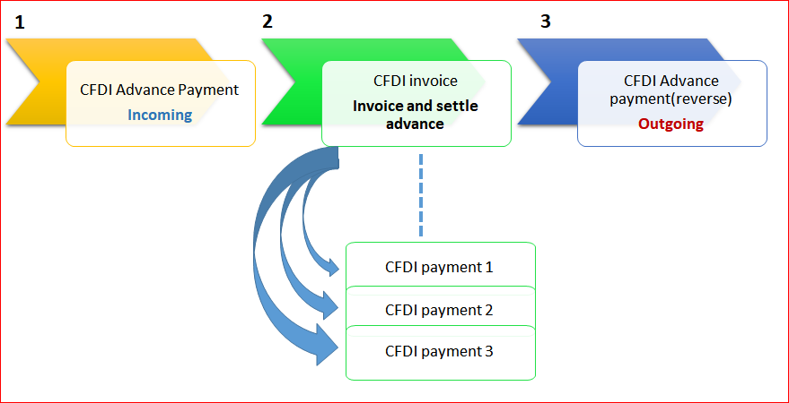

CFDI layout version 3.3
Electronic invoice parameters
If your organization uses electronic invoices that are validated and certified by a third-party digital signature service provider (PAC), you enable electronic invoicing by using the fields in the CFDI area of the Electronic invoice parameters page.
The following changes are introduced in version 3.3 of the Comprobante Fiscal Digital por Internet (CFDI) layout:
CFDI version: Version 3.3 is now available.
CFDI digest algorithm: SHA-256.
CFDI payment XML schema file: The path and name of the schema file that is used to validate the CFDI payment complement.
Total amount limits: Specify the incoming and outgoing total amount limits that require a confirmation number.
Default government classification codes:
- SAT product code – Use this classification for scenarios where the item code isn't identified.
- SAT unit code – Use this classification for scenarios where the unit of measure isn't identified.
CFDI Foreign trade parameters
If your organization uses electronic invoices for foreign trade business (CFDI), enable the following information in the CFDI foreign trade area of the Electronic invoice parameters page:
- Operation type: Select Export.
- CFDI version: Select version 1.1.
- Reporting currency: Select the currency code that represents US dollar, as the foreign complement should be expressed in this currency.
- CFDI Foreign trade XML schema file: Select the path and schema file to validate the CFDI foreign trade complement.
- Brand: Use this field to introduce the brand for scenarios where the product or service is not identified as a Dynamics 365 Finance item code.
CFDI withholding parameters
If your organization uses electronic invoice withholding documents that are validated and certified by a third-party digital signature service provider (PAC), you enable electronic invoicing by using the fields in the CFDI Withholding and Number sequences area of the Electronic invoice parameters page.
- Enable CFDI withholding: Select Yes to enable the generation of CFDI withholding.
- CDFI XSLT file: Path and schema file to validate the CFDI withholding document.
- CFDI digest algorithm: SHA-256.
- CFDI XML schema file: Path and schema file to validate the CFDI withholding document.
- Send mail: Select Yes to enable the action to send email with the CFDI withholding XML file attached.
- Email ID: Select the email ID template.
- Number sequences: Select the number sequence code used for Withholding journals.
SAT catalogs
| SAT catalog | Dynamics 365 Finance mapping |
|---|---|
| cUsoCFDI | Select Organization administration > Setup > Einvoice > SAT classifications > CFDI purpose to enter the list of CFDI purpose classifications that are defined by the government. You can enter the following information: Mexican tax authorities (SAT) code classification, description, effective version, and expiration date.
This information must be entered in the CFDI purpose field on the sales invoice transaction header. You can also define a default CFDI purpose per customer by selecting Customers and using the Invoice and delivery option. |
| c_Aduana | Not applicable |
| c_ClaveProdServ | Select Organization administration > Setup > Einvoice > SAT classifications > Product and services to enter the list of item code classifications that are defined by the government. You can enter the following information: SAT code classification, description, effective version, and expiration date.
After the list is created or updated, you can map the related classification in the following master data:
|
| c_ClaveUnidad | Select Organization administration > Setup > Einvoice > SAT classifications > Unit of measures to enter the list of unit of measure classifications that are defined by the government. You can enter the following information: SAT code classification, description, effective version, and expiration date.
After the list is created or updated, you can map the related classification in the following master data:
|
| c_CodigoPostal | This information is identified by the ZIP Code/postal code in the address code of the customer, company, or other related address. |
| c_FormaPago | Existing information at Accounts receivable > Setup > Payment > Method of Payment > SAT payment is used. |
| c_Impuesto | This information is determined by the Tax type value in the sales tax code setup. |
| c_MetodoPago | Select Organization administration > Setup > Einvoice > SAT classifications > Method of payment to enter the list of methods of payment that are defined by the government.
This information must be entered in the Payment type field on the sales invoice transaction header. You can also define the default payment type per customer by selecting Customers and using the Invoice and delivery option. |
| c_Moneda | This information is identified by the Currency code value that is configured in Finance.
The government defines the exchange rate variation that is allowed. This value must be configured at General ledger > Setup > Currencies > Electronic invoices. You can enter the Exchange rate variation limit value per currency. |
| c_NumPedimentoAduana | Existing information in the Custom Number field on the sales invoice transaction line is used. |
| c_Pais | This information is identified by the Country code value that is configured in Finance. |
| c_PatenteAduanal | Not applicable |
| c_RegimenFiscal | Select Organization administration > Setup > Einvoice > SAT classifications > Tax regime to enter the list of tax regime classifications that are defined by the government. You can enter the following information: SAT code classification, description, effective version, and expiration date.
After the list is created or updated, you can map the related classification in the following master data:
|
| c_TasaCuota | This information is determined by the Tax type value in the sales tax code setup. |
| c_TipodeComprobante | This information is determined by the type of sales invoice transaction. The following types are supported for this feature:
|
| c_TipoFactor | This information is determined by the Tax type value in the sales tax code setup.
The sales tax code configuration identifies the Exempt type as tax rate = 0.00 and tax type = VAT. It identifies the TASA type as tax rate <> 0.00. |
| c_TipoRelacion | New CFDI reference functionality has been implemented that lets users identify the various types of relations between CFDI documents. Some of these relation types are assigned automatically. Users can manually select other relationship types in specific scenarios. |
| c_Incoterm | Organization administration > Setup > Einvoice > SAT classifications > Incoterm, to introduce the list of incoterm classifications as defined by the government. The user will be able to introduce the following information: SAT code classification, description, version effective, and expiration date. After the list is created or updated, the user will be able to map the related classification in the following master data:
|
| c_TipoOperation | The only available value is Exportacion (Export), which is selected from the Einvoice parameters page. |
| c_Brand | Product Information Management > Setup >Brand, to introduce the brand code. The user will be able to introduce brand code and description. |
| c_FraccionArancelaria | Organization administration > Setup > Einvoice > SAT Classifications > Tariff fraction to introduce the list of tariff fraction classifications as defined by the government. The user will be able to introduce the following information: SAT code classification, description, version effective, and expiration date. After the list is created or updated, the user will be able to select the tariff fraction at the line level in a sales order line, free text invoice line, and project invoice. |
| c_UnidadAduana | Organization administration > Setup > Einvoice > SAT Classifications > Customs unit of measure, to introduce the list custom unit of measure classifications as defined by the government. The user will be able to introduce the following information: SAT code classification, description, version effective, and expiration date. After the list is created or updated, the user will be able to select the customs unit of measure at the line level in a sales order line, free text invoice line, and project invoice. |
| c_Retenciones | Organization administration > Setup > Einvoice > SAT classifications > Withholding type, to introduce the list of withholding type classifications as defined by the government. The user will be able to introduce the following information: Code, description, and the type of complement that the CFDI withholding will generate. |
| c_TipoContribuyenteSujetoRetencio | This categorization is included in the Vendor master data > Invoice and delivery , where the user will be able to select the type of tax payer that is subject to withholding. |
CFDI reference
Users must be able to reference one or more related CFDI invoices in specific scenarios. For example, a customer might return an item if the incorrect item was received, or if the item is defective. You must then create a return order, identify the original sales invoice that was submitted, and identify the type of relation (cTipoRelacion) that is defined by the government. In this case, the relation is 03: Goods return.
Before you post a sales invoice, you can reference the related CFDI invoice by selecting Post > Setup > CFDI reference.
You can select the available list of CFDI invoices that have been approved, or you can enter the following information:
- Universally unique identifier (UUID)
- Type of relation
When a CFDI payment complement is generated, this functionality is also available under Payment journals > CFDI reference.
The following information describes how a CFDI payment complement is generated when payment is collected from a customer and applied to an existing CFDI invoice document.
CFDI payment complements are generated from the payment journal and settlement process under the following conditions:
- The journal payment is settled with one or more invoices.
- The journal settlement is settled with one or more invoices.
- In the journal name definition, the journal type is set to Customer payment.
After the journal payment or journal settlement is posted, the Export/Import batch process is run to get the related approval from PAC (third-party software).
The following additional information is required for the journal payment, depending on the method of payment that is selected:
- An offset main account.
- A third-party customer bank account.
- A Registro Federal de Contribuyentes (RFC) customer bank account. A new field has been added to the Customer bank account page to meet the legal requirements that were established by the tax authorities.
Based on a customer's request, you can use the CFDI electronic invoice inquiry to view, email, export, or print a CFDI payment complement that was previously generated. Select Accounts receivable > Inquiries and reports > CFDI (electronic invoices), and then select the Payment tab. The printed CFDI electronic invoice includes a two-dimensional barcode in accordance with the format for Quick Response Codes (QR codes) that is described in the International Organization for Standardization (ISO)/International Electrotechnical Commission (IEC) 18004 standard.
Customer advance payments
This section describes the processing and setup of an advance customer payment so that a CFDI electronic invoice can be generated and issued. Per the government definition, a specific procedure must be followed when advance payments are collected from customers.
- CFDI advance payment – An electronic invoice is issued to the customer for the amount of the advance that was received.
- CFDI invoice – After the operation is realized, and the advance payment is applied, the company must issue the CFDI invoice of operation and details of the CFDI advance payment UUID that was issued in step 1.
- CFDI advance payment reverse – An electronic invoice is issued to reverse the advance payment that was applied.

Prerequisites
You use the functionality for prepayment journal vouchers to issue a CFDI advance payment. Before you can submit the advance payment, you must complete the following prerequisites.
Select Accounts receivable > Setup > Customer posting profiles, and create a posting profile for advance payments.
Select Accounts receivable > Setup > Accounts receivable parameters > Ledger and sales tax > Payment, and follow these steps:
- Select the posting profile that you created earlier.
- If sales tax is calculated and posted when you post a prepayment journal voucher, select the Sales tax on prepayment journal voucher check box.
Step 1: Issue a CFDI advance payment
Select Accounts receivable > Journals > Payments > Payment journal to create the advance payment.
Enter the lines and the related information. Include the method of payment and sales tax codes as appropriate.
On the Payment tab, select the Prepayment journal voucher check box.
Post the advance payment.
Select Accounts receivable > Periodic > CFDI electronic invoices > Export/Import electronic invoice process to request the digital stamp of CFDI advance payment.
Select Accounts receivable > Inquire > Journals > CFDI electronic invoice, and then select the Payment tab to inquire about the status of the CFDI advance payment. This transaction is classified in the Document type information field as Prepayment.
Note
The following criteria are used to identify CFDI advance payment transactions in the system:
- The journal name type is set to Customer payment.
- The Prepayment journal voucher check box is selected.
Any payment transaction that doesn't meet these criteria is considered a regular payment.
Step 2: Issue a CFDI invoice together with details of the advance payment that was applied
Create a sales invoice transaction.
Before you post the invoice, you can settle the advance payment that you created in Step 1: Issue a CFDI advance payment. To settle the advance payment, use the Open transaction settle option.
On the Post page, you can verify the referenced CFDI invoice. The invoice is created automatically, and the type of relation (cTipoRelacion) is set to 07.
Post the sales invoice.
Note
As of publication, the government hasn't updated the schema to enable cTipoRelacion to be set to 07. If you receive an error message during schema validation, you can manually select 01: Credit note to solve the issue.
Step 3: Issue a CFDI advance payment reverse
After the company issues a CFDI invoice for the total amount of the operation, it must submit a CFDI advance payment reverse (Egreso) for the advance payment that was settled. This CFDI advance payment reverse is automatically generated when you receive approval for the CFDI invoice that you generated in Step 2: Issue a CFDI invoice together with details of the advance payment that was applied.
Based on a customer's request, you can use the CFDI electronic invoice inquiry to view, email, export, or print a CFDI payment complement that was previously generated. Select Accounts receivable > Inquiries and reports > CFDI (electronic invoices), and then select the Payment tab. The printed CFDI electronic invoice includes a two-dimensional barcode in accordance with the format for QR codes that is described in the ISO/IEC 18004 standard.
CFDI advance payments are identified by a document type of Prepayment.
Confirmation number
The confirmation number is required on a CFDI invoice when the total amount of the invoice or the exchange rate variation is outside the limits that the government has established. In this scenario, you can specify the required confirmation in two ways:
- If the company knows that the limits have been exceeded, you can include the confirmation code on the sales invoice transaction header.
- If you receive a rejection from PAC because the limits have been exceeded, you can set the confirmation code for the approval process at CFDI electronic invoice inquire > Functions > Set authorization code and Resend again.
CFDI Foreign trade
When you post a sales order, free text invoice, credit note, return order, project invoice, or project sales order as an electronic invoice CFDI layout 3.3 for a foreign customer, you can generate the foreign trade complement 1.1 by introducing the following required information to generate this complement.
Sales order header
Purpose: Select the option P01. If you don't select this option, you will get a rejection from PAC services.
Incoterm: Select the incoterm code established by the government in the catalog cIncoterm.
Foreign trade: Select this field to generate CFDI foreign trade complement.
Source certificate: The selection you make will depend on free trade agreements that the Mexican government has with different countries:
- Unmarked (0): No certificate is required
- Marked (1): Certificate is required
Certificate: The certificate number if the source certificate has been defined as marked (1).
Note
The Registration number and Fiscal address fields are used to submit a CFDI packing slip with foreign complement. Refer to the CFDI packing slip for the foreign complement feature.
Line
CFDI electronic invoice:
- Consignment
- Samples
- Tariff Fraction: Select the tariff fraction code established by the government in the catalog cFraccionArancelaria.
- Custom unit of measure: Select the custom unit of measure code established by the government in the catalog cUnidadAduana.
Brand: Select the related brand. This information is defaulted from product information in case of Sales order and from electronic invoice parameters when free text invoice and project is used.
Product: Tracking dimensions > Serial number: Mandatory information to specify the serial number of goods.
After you complete all of the required information, you need to proceed with the regular process of CFDI 3.3 invoice generation. Refer to the CFDI 3.3 invoice layout feature that was recently released.
CFDI Packing slip
The CFDI packing slip (Traslado) previously known as Carta de Porte, is an electronic document (CFDI) in which all goods are declared when they are transported from one site to another and is required by the carrier to protect the goods.
The CFDI packing slip document is generated from the following entry points:
- Sales order > Packing slip for customers.
- Transfer order > Shipped from different sites. Transfers between the same site will not generate a CFDI packing slip, as this requirement is mandatory when the goods are transferred between different locations.
Additionally, users will be able to complete the following actions when the CFDI packing slip is issued and approved by the PAC:
- Manually cancel a CFDI packing slip.
- View and export a generated XML file.
- Print the CFDI packing slip in PDF format.
- Email a printable version of the CFDI packing slip.
Customer master data
Complete the following steps to generate a CFDI packing slip from the Customer page.
- Select Account receivables > Customer > All customers, and select a customer record.
- In the customer record, on the Action Pane, select Invoice and delivery > Electronic invoice.
- Set the Enable CFDI Packing slip option as necessary. The default for this option is in Sales order > Pack and Pick > Packing slip.
Sales order packing slip
Complete the following steps to generate a CFDI packing slip document from a sales order.
- Create and confirm a sales order.
- On the Sales order page, on the Action Pane, select Pick and Pack > Packing slip.
- Select the Enable CFDI option to generate a CFDI packing slip.
- Select OK to generate the packing slip.
- Select Account receivables > Periodic > CFDI - Electronic invoice > Export/Import electronic invoice process, to request the digital stamp and issue the CFDI packing slip XML to PAC service provider.
- Select Account receivables > Inquire > Journals > CFDI (electronic invoice) to review the status of the CFDI packing slip.
- Select the Packing slip tab to view the status of CFDI packing slip.
- View, email, export, or print a CFDI packing slip. The printed CFDI packing slip includes a two-dimensional bar code in accordance with the format of Quick Response Code (QR code) that is described in the standard ISO/IEC18004.
Note
A foreign trade complement CFDI packing slip is not supported for a sales order packing slip. However it is supported in the CFDI invoice for foreign trade.
Transfer orders
Complete the following steps to generate the CFDI packing slip document for items that are in transit from one site to another.
- Select Inventory management > Periodic > Transfer orders.
- Create a transfer order, and select the from warehouse and the to warehouse.
- Add the related items and the quantity of items to be shipped.
- On the Action Pane, select Post > Ship transfer.
- Select Edit lines and then select the shipment.
- Select Enable CFDI to generate the packing slip.
Note
CFDI packing slip documents are only generated from transfer orders between different sites. If the from and to warehouses belong to the same site, the Enable CFDI option isn't enabled because the CFDI packing slip is not required between the same sites.
- Select Account receivables > Periodic > CFDI - Electronic invoice > Export/Import electronic invoice process, to request the digital stamp and issue the CFDI packing slip XML to the PAC service provider.
- To view the status of the CFDI packing slip, select Account receivables > Inquire > Journals > CFDI (electronic invoice).
- Select the Transfer order tab to check the status of the CFDI packing slip.
- View, email, export, or print the CFDI packing slip. The printed CFDI packing slip includes a two-dimensional bar code in accordance with the format of Quick Response Code (QR code) that is described in the standard ISO/IEC18004.
CFDI withholding
The CFDI withholding document is an electronic withholding certificate established by the tax authorities in Mexico (SAT) and applicable for vendor payments when ISR and VAT withholding taxes are applied.
The CFDI withholding document includes all of information that is required by the government including company details, vendor accounts, and the amount of related withholding taxes.
CFDI withholding documents will be generated from tax transactions where the sales tax codes IVA and ISR are defined as negative in the following transactions entry points:
- Purchase invoice
- Vendor invoice (non PO)
- Invoice register
- Invoice journal
- Journal transaction in the General Ledger area when vendor account is present
Withholding type is defaulted from the vendor account and the user can change the withholding type during the transaction registration process.
Periodic process
A CFDI withholding document is generated from Accounts payables > Periodic > CFDI > Generate CFDI withholding. The user can select the vendor account and the from and to Month/year.
After the process is confirmed, CFDI withholding documents are generated and you must to start the process to request the digital stamp to PAC service provider by selecting Accounts payables > Periodic > CFDI > Export/Import CFDI withholding process.
Specific complements are generated for the following withholding types:
Interest (16): Additional information is required during the transaction registration as:
- Transaction belongs to financial system.
- Interest cashed in the current period/year.
- Interests belongs to derived financial operations.
- Nominal, real interest, and loss interest amounts.
Foreign payments (18): Additional information must be configured in the vendor master data when foreign vendor RFC of legal representative in Mexico.
Note
Other complements are not currently supported.
Inquire CFDI withholding documents
After the CFDI withholding document is issued to PAC, you can view the status and complete the related actions by selecting Accounts payables > Inquire > Journals > CFDI withholding journal.